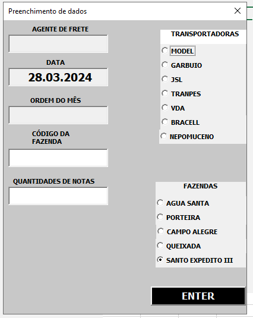

Detalhes do Projeto de Automação da emissão de notas fiscais
Sobre o Projeto
O objetivo principal deste projeto é a automação do processo de emissão de notas fiscais, visando uma significativa redução no tempo requerido e minimização dos erros decorrentes do preenchimento manual. Utilizamos VBA e outras tecnologias para criar uma solução eficiente e confiável.

Características
- Automação da transação ztsd_0010.
- Interface amigável e fácil de usar.

- Integração com sistemas existentes.
- Logs detalhados para acompanhamento de emissões.
Tecnologias Utilizadas
Como Funciona
A automação do processo de emissão de notas fiscais foi concebida e implementada com o intuito de otimizar a eficiência operacional e a precisão dos dados. A motivação para tal inovação decorre da necessidade de agilizar transações rotineiras e minimizar a margem de erro associada ao preenchimento manual, aspectos essenciais para a melhoria da produtividade e confiabilidade operacional.
Anteriormente, a emissão de cada nota fiscal demandava, em média, um minuto completo, um tempo considerável quando acumulado ao longo de múltiplas transações diárias. Com a introdução da automação, esse tempo foi drasticamente reduzido para apenas 18 segundos por transação. Esse ganho de tempo significativo não apenas aumenta a capacidade de processamento de notas fiscais, mas também libera recursos humanos para se dedicarem a tarefas de maior valor estratégico.
Além disso, um dos avanços mais notáveis introduzidos por essa automação é o sistema de datas automáticas. Este mecanismo assegura que os erros de digitação, uma fonte comum de inconsistências e retrabalho, sejam praticamente eliminados. Ao automatizar a inserção de datas, garantimos que os dados registrados estejam sempre corretos, o que contribui para a integridade das transações financeiras e a conformidade com regulamentações fiscais. Essa melhoria não apenas otimiza a precisão dos registros, mas também reforça a confiança dos stakeholders no processo de emissão de notas fiscais, estabelecendo uma base sólida para transações transparentes e eficientes.